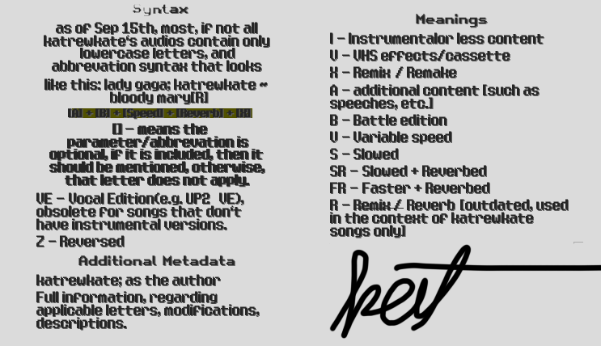
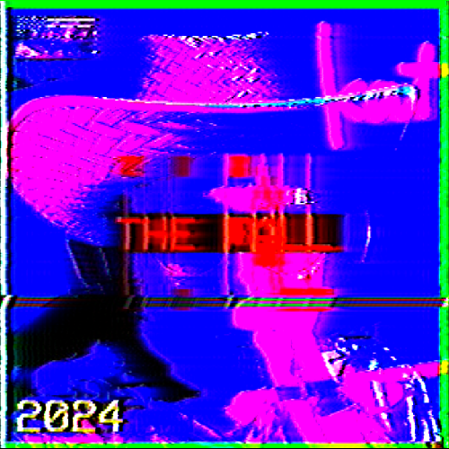
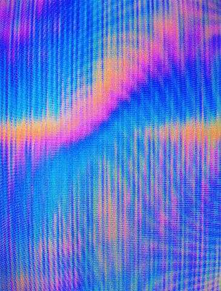
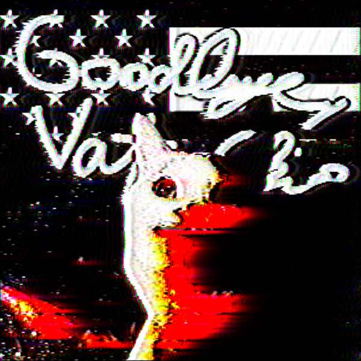
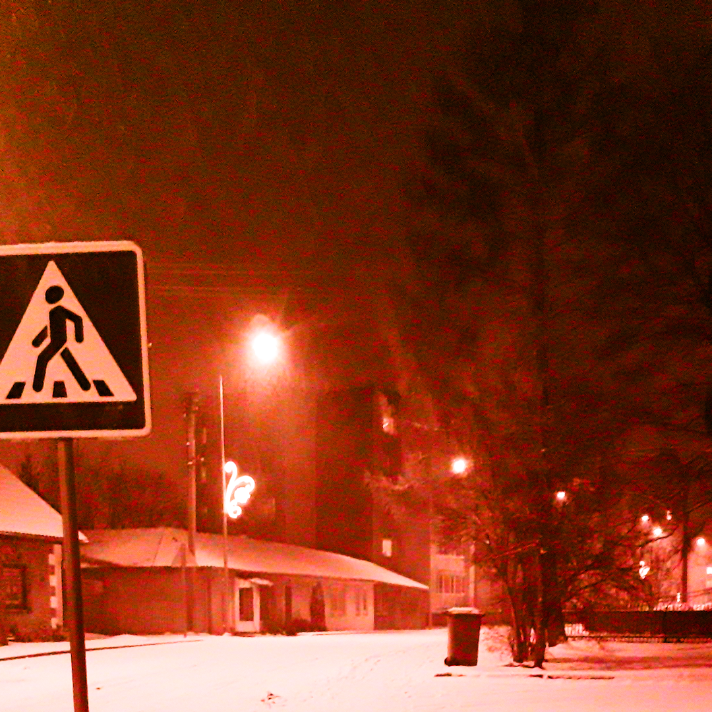

hi! i decided, that the regular kat page, and well, even the main "misc" page wouldnt fit the content i
would like to add here. so what the hell is this place? well, im planning on adding personal
experiences, lore and other stuff on this page, since i dont think any other page fits.
to be
fair though, i still dont know what i will put here, i will jokingly add this part, because i think it
will be funny, if this said "i dont have any ideas", and by some miracle this page becomes the most
packed page. that'd be funny innit.
ok, but genuinely, what will be here? well, personal eras,
and other shi i deem valuable enough to be here. i highly believe, that this page will look the least
complete/professional or katpage-like, but thats the way it will be. i kind of tried to aim for a 90s
page style. so yea.
| era |
duration |
major events |
| ??? |
from 2025 oct to ??? |
??? |
eurobeat era
 |
from 2025 april to late 2025 oct |
- kat gets his b cat driver's license [2025 oct]
- kat turns 18 [2025 sep]
- kat gets w mushroomgurl [2025 may/june]
- kat starts his driving lessons [2025 may]
- revival of katrewkate yt [for a while]
- kat studies for theory test b cat [2025 may, the start of this era]
|
fight club era
 |
from 2024 december to 2025 april |
- discovering fight club
- attempting to get "BACK ON TRACK" [hehe, get it?]
- studying, reading books n shi
- grinding.
- meetz mushroomgurl.
- trying new thingz.
|
the following will rely on music [eras/playlist], and other stuff, to
determine the eras
 legend to understand designations for variants of songs, etc. |
the upfall arc [mini-era]
 |
from 2025 [those who know. one typo - kat: changez the entire timeline... 2024*] november 24th to dec 1st |
- all songs were released with i/ive versions
- renewed hope with sm from previous eras
- things in general getting bettah
|
the fall era
 |
from 2024 sep 18th to 2024 november 24th |
- released fourrr new songz ["bro", "and when", "branching out", "own hands"]
- kat falling in luv with cod mw series and liked ghost's character lowkey, mf had some jokez
- mostly just an era in between
|
the dead era
 |
2024 jun to 2024 sep 18 |
- mostly a boring era with only remixes of older songz
- summer, new phone
- best friend leaves school [rip rock, da goat] :(
- discovering new thingz.
|
the "changing" era
 |
2024 feb to 2024 jun |
- an era, where katrewkate slowly replaced vafelkis
- a few songs, mainly remixes of empress, and a ve version release
- kat creates an ad for the lt company "dvaro" for a school project, [dvaro sponsor me atp]
- idk wat else to put yet
|
the descent era
 |
from 2023 dec 1 to 2024 feb |
- release of a song that is to this day the one with the most references [sound effects, references to events, etc]
- dying for a2 category [regitra] and ktms
- lowkey sad period + rise and fall of mr codem [rip man]
- dissing AS with rock. im not kidding. LOL
- playing gta v with buddies and being kind of sad, cuz the last era kind of failed me 💀 ifykyk
|
the "original" era
 |
from 2023 october 10th to 2023 december 1st |
- released a new song referencing vynoteka and shi, called "sophomore" [dogshit.mp3... not kidding, thats the actual file name]
- developed a crush on someone lowkey 💀
- moped crash, as noted in the newspapers [kat page] :D
- shifting music taste and interests.
|
| other eras arent very well defined or at all, so they might be lowkey inaccurate and are here just to... be here, really. :D |
| ??? |
??? |
??? |
| ??? |
??? |
??? |
| ??? |
??? |
??? |
| ??? |
??? |
??? |
eurobeat era
an era that started actually quite accidentally, it all started when i found and downloaded an old
playlist i knew existed, and then i decided to go take my license, and well, the cover of the playlist
was a car, so i listened to it, and then i passed, since then, i guess that playlist was all the hype.
[insert katlore's eurobeat shi]. now, however, as of writing in late
oct, the era is mostly dead and over, i like to say, that the era ended around then, when i passed my b
cat exam.
fight club era
the fight club era was around the 20th of dec 2024, when i watched fight club for the first time and
actually enjoyed it, and the message. having had my mental health destroyed by the previous era, i felt
horrible and decided to have my own "fight club" bubble, eventually i started yapping about it and its
messages and the movie itself, because i kind of started to like the philosophy of it and such, and it
actually became one of the best eras in my life, despite being a bit wanky and all over the place, i
feel liek i grew as a person, because i read books, found out my limits, became more confident, started
loving myself just a little bit more. ended due to a stagnation [of the era] and shifting interests. the
theme song for this is actually
where is my mind
[acoustic... like me]
explaining other references:D